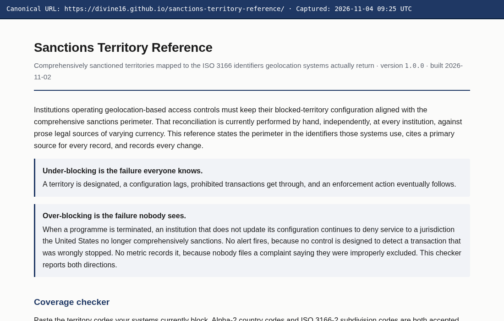
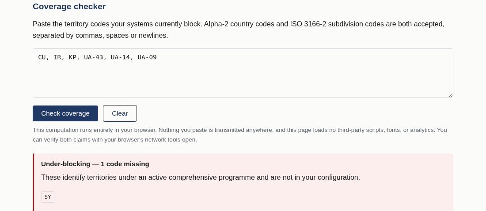
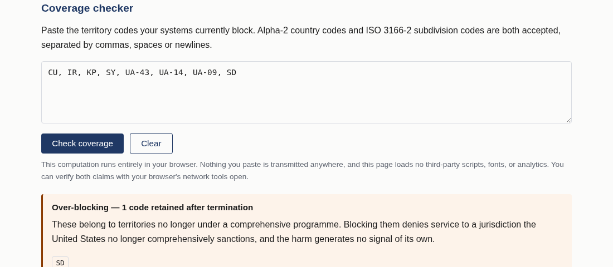
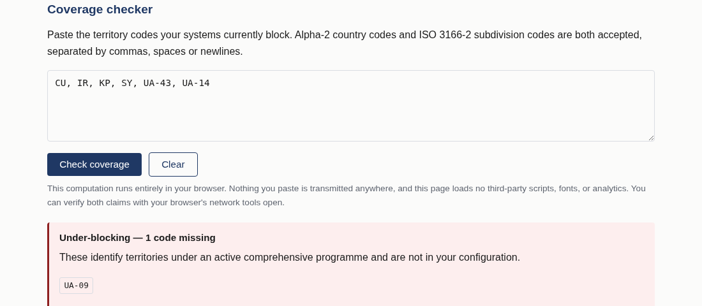
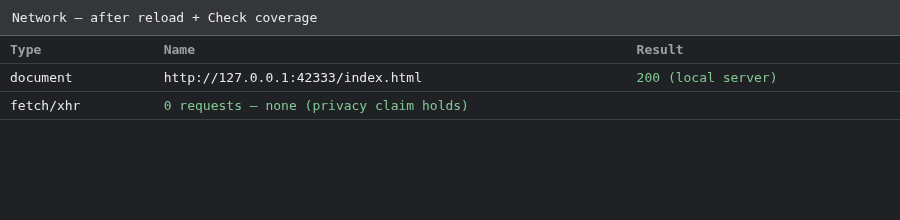
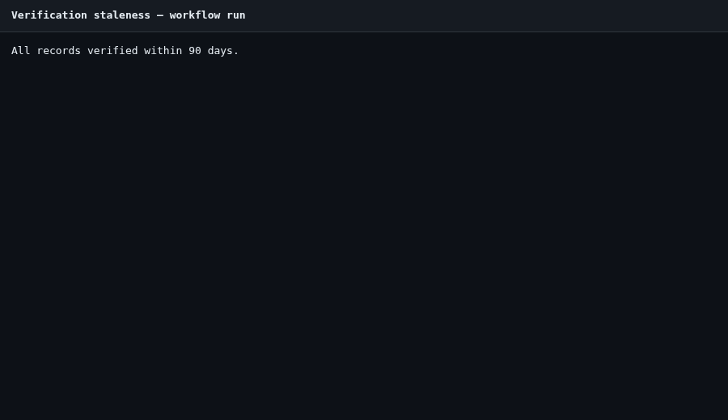
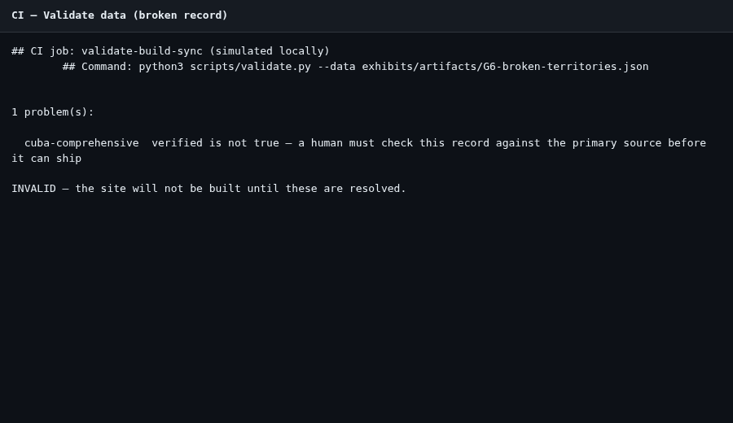

Project: Sanctions Territory Reference
Preparer: Divine Linus
Repository: https://github.com/Divine16/sanctions-territory-reference
Zenodo: https://zenodo.org/records/23677148 · DOI 10.5281/zenodo.23677148
Package generated: 2026-11-04 UTC
All items below are included in this document and in exhibits/artifacts/.
| ID | Requirement | Status |
|---|---|---|
| G.5.1 | Landing with canonical URL and date | Done |
| G.5.2 | Under-blocking screenshot | Done |
| G.5.3 | Over-blocking screenshot | Done |
| G.5.4 | Partial coverage screenshot | Done |
| G.5.5 | Network audit — zero checker requests | Done |
| G.6.1 | Records + citations | Done |
| G.6.2 | CHANGELOG.md | Done |
| G.6.3 | Staleness YAML + run record | Done |
| G.6.4 | validate.py enforced rules | Done |
| G.6.5 | CI validation failure (broken record) | Done |
| G.7.1 | Feed URL | Done |
| G.7.2 | Retrieved JSON + timestamp | Done |
| G.7.3 | Build script excerpt | Done |
| G.7.4 | Wayback / archive capture record | Done |
Canonical site URL: https://divine16.github.io/sanctions-territory-reference/
(GitHub Pages target; same build as docs/index.html in repo.)

Input: CU, IR, KP, UA-43, UA-14, UA-09 (missing SY)

Input: CU, IR, KP, SY, UA-43, UA-14, UA-09, SD

Input: CU, IR, KP, SY, UA-43, UA-14

Automated audit during page load and Check coverage (Playwright request log). Only the local index.html document is fetched.

Generated: 2026-11-04 09:25:07 UTC
| ID | Official name | Status | ISO codes | Primary source | Verified | Verified by |
|---|---|---|---|---|---|---|
| cuba-comprehensive | Cuba | active | CU | https://www.ecfr.gov/current/title-31/subtitle-B/chapter-V/part-515 | 2026-10-26 | Divine Linus |
| iran-comprehensive | Iran | active | IR | https://www.ecfr.gov/current/title-31/subtitle-B/chapter-V/part-560 | 2026-10-26 | Divine Linus |
| north-korea-comprehensive | North Korea (Democratic People's Republic of Korea) | active | KP | https://www.ecfr.gov/current/title-31/subtitle-B/chapter-V/part-510 | 2026-10-26 | Divine Linus |
| syria-comprehensive | Syria | active | SY | https://www.ecfr.gov/current/title-31/subtitle-B/chapter-V/part-542 | 2026-10-26 | Divine Linus |
| ukraine-crimea-region | Crimea region of Ukraine | active | UA-43 | https://www.federalregister.gov/documents/2014/12/24/2014-30194/ukraine-related-sanctions-regulations | 2026-10-26 | Divine Linus |
| ukraine-donetsk-luhansk-regions | Certain regions of Ukraine (Donetsk and Luhansk oblasts, non-government controlled areas) | active | UA-14, UA-09 | https://www.federalregister.gov/documents/2022/02/28/2022-04254/ukraine-related-sanctions-regulations | 2026-10-26 | Divine Linus |
| sudan-comprehensive-terminated | Sudan | terminated | SD | https://www.federalregister.gov/documents/2020/10/16/2020-22935/sudanese-sanctions-regulations | 2026-10-26 | Divine Linus |
# Change log
Append-only. Every modification to `data/territories.json` is recorded here with
the instrument that caused it. Entries are never edited or removed — a correction
is a new entry stating what was wrong and what it now says.
Format: `YYYY-MM-DD — territory — change — causing instrument — who`
---
## 2026-10-26
- 2026-10-26 — Cuba — initial active comprehensive record — Cuban Assets Control Regulations (31 C.F.R. Part 515) — Divine Linus
- 2026-10-26 — Iran — initial active comprehensive record — Iranian Transactions and Sanctions Regulations (31 C.F.R. Part 560) — Divine Linus
- 2026-10-26 — North Korea — initial active comprehensive record — North Korea Sanctions Regulations (31 C.F.R. Part 510) — Divine Linus
- 2026-10-26 — Syria — initial active comprehensive record — Syrian Sanctions Regulations (31 C.F.R. Part 542) — Divine Linus
- 2026-10-26 — Crimea region of Ukraine — initial active regional record — Executive Order 13685 (2014) — Divine Linus
- 2026-10-26 — Donetsk/Luhansk regions of Ukraine — initial active regional record with scope/ISO mismatch note — Executive Order 14065 (2022) — Divine Linus
- 2026-10-26 — Sudan — initial terminated comprehensive record (programme lifted) — Executive Order 13942 (2020); 31 C.F.R. Part 538 wind-down — Divine Linus
name: Verification staleness
on:
schedule:
- cron: "0 14 * * 1"
workflow_dispatch:
permissions:
contents: read
issues: write
jobs:
check:
runs-on: ubuntu-latest
steps:
- uses: actions/checkout@v4
- name: Report records older than 90 days
id: stale
run: |
set +e
python3 scripts/validate.py --staleness 90 2>&1 | tee staleness.log
code=$?
echo "exit_code=$code" >> "$GITHUB_OUTPUT"
exit 0
- name: Open issue when stale
if: steps.stale.outputs.exit_code != '0'
uses: actions/github-script@v7
with:
script: |
const fs = require('fs');
const body = fs.readFileSync('staleness.log', 'utf8');
const title = 'Verification staleness: records exceed 90-day threshold';
const { data: issues } = await github.rest.issues.listForRepo({
owner: context.repo.owner,
repo: context.repo.repo,
state: 'open',
});
if (issues.some(i => i.title === title)) {
console.log('Open staleness issue already exists.');
return;
}
await github.rest.issues.create({
owner: context.repo.owner,
repo: context.repo.repo,
title,
body: [
'Scheduled workflow `Verification staleness` found records that need re-verification.',
'',
'```',
body.trim(),
'```',
'',
'Re-read each cited primary instrument, update `last_verified` and `verified_by` in `data/territories.json`, note the change in `CHANGELOG.md`, and run `make build`.',
].join('\n'),
});
Run record (make validate / workflow equivalent):
All records verified within 90 days.

validate.py)# ---- the integrity rules that matter
src = r.get("primary_source")
if not isinstance(src, str) or not src.strip():
p.add(where, "primary_source is required — no record ships without a citation")
elif PLACEHOLDER.search(src):
p.add(where, "primary_source is still a placeholder")
if r.get("verified") is not True:
p.add(where, "verified is not true — a human must check this record against "
"the primary source before it can ship")
vby = r.get("verified_by")
if r.get("verified") is True and (not isinstance(vby, str) or not vby.strip()):
p.add(where, "verified_by must name the person who checked the citation")
## CI job: validate-build-sync (simulated locally)
## Command: python3 scripts/validate.py --data exhibits/artifacts/G6-broken-territories.json
1 problem(s):
cuba-comprehensive verified is not true — a human must check this record against the primary source before it can ship
INVALID — the site will not be built until these are resolved.

https://divine16.github.io/sanctions-territory-reference/feed.json
Public mirror (retrieved for exhibits until Pages serves the URL above):
https://raw.githubusercontent.com/Divine16/sanctions-territory-reference/main/docs/feed.json
{
"retrieved_at_utc": "2026-11-04T09:25:11.480638+00:00",
"feed_url": "https://divine16.github.io/sanctions-territory-reference/feed.json",
"retrieval_method": "https_raw_githubusercontent",
"http_status": 200,
"retrieved_from": "https://raw.githubusercontent.com/Divine16/sanctions-territory-reference/main/docs/feed.json"
}
{
"name": "Sanctions Territory Reference",
"version": "1.0.0",
"generated": "2026-11-02",
"source_file": "data/territories.json",
"record_count": 7,
"active_count": 6,
"notice": "Comprehensive territorial sanctions programmes only. Not a list of designated persons; does not cover sectoral or list-based measures; not legal advice. Verify against the cited primary source before relying on any record.",
"territories": [
{
"id": "cuba-comprehensive",
"official_name": "Cuba",
"status": "active",
"designating_instrument": "Cuban Assets Control Regulations (31 C.F.R. Part 515)",
"designating_date": "1963-07-08",
"terminating_instrument": null,
"terminating_date": null,
"cfr_part": "31 C.F.R. Part 515",
"iso_codes": [
"CU"
],
"geolocation_confidence": "high",
"mismatch_note": null,
"primary_source": "https://www.ecfr.gov/current/title-31/subtitle-B/chapter-V/part-515",
"last_verified": "2026-10-26",
"verified": true,
"verified_by": "Divine Linus"
},
{
"id": "iran-comprehensive",
"official_name": "Iran",
"status": "active",
"designating_instrument": "Iranian Transactions and Sanctions Regulations (31 C.F.R. Part 560)",
"designating_date": "2012-10-09",
"terminating_instrument": null,
"terminating_date": null,
"cfr_part": "31 C.F.R. Part 560",
"iso_codes": [
"IR"
],
"geolocation_confidence": "high",
"mismatch_note": null,
"primary_source": "https://www.ecfr.gov/current/title-31/subtitle-B/chapter-V/part-560",
"last_verified": "2026-10-26",
"verified": true,
"verified_by": "Divine Linus"
},
{
"id": "north-korea-comprehensive",
"official_name": "North Korea (Democratic People's Republic of Korea)",
"status": "active",
"designating_instrument": "North Korea Sanctions Regulations (31 C.F.R. Part 510)",
"designating_date": "2011-08-30",
"terminating_instrument": null,
"terminating_date": null,
"cfr_part": "31 C.F.R. Part 510",
"iso_codes": [
"KP"
],
"geolocation_confidence": "high",
"mismatch_note": null,
"primary_source": "https://www.ecfr.gov/current/title-31/subtitle-B/chapter-V/part-510",
"last_verified": "2026-10-26",
"verified": true,
"verified_by": "Divine Linus"
},
{
"id": "syria-comprehensive",
"official_name": "Syria",
"status": "active",
"designating_instrument": "Syrian Sanctions Regulations (31 C.F.R. Part 542)",
"designating_date": "2004-05-11",
"terminating_instrument": null,
"terminating_date": null,
"cfr_part": "31 C.F.R. Part 542",
"iso_codes": [
"SY"
],
"geolocation_confidence": "high",
"mismatch_note": null,
"primary_source": "https://www.ecfr.gov/current/title-31/subtitle-B/chapter-V/part-542",
"last_verified": "2026-10-26",
"verified": true,
"verified_by": "Divine Linus"
},
{
"id": "ukraine-crimea-region",
"official_name": "Crimea region of Ukraine",
"status": "active",
"designating_instrument": "Executive Order 13685 (2014)",
"designating_date": "2014-12-19",
"terminating_instrument": null,
"terminating_date": null,
"cfr_part": "31 C.F.R. Part 589",
"iso_codes": [
"UA-43"
],
"geolocation_confidence": "medium",
"mismatch_note": "The designation follows the Crimea region; geolocation products variously return ISO 3166-2 subdivision UA-43, country-level UA, or inconsistent labels. Implementers must document which signal they treat as authoritative.",
"primary_source": "https://www.federalregister.gov/documents/2014/12/24/2014-30194/ukraine-related-sanctions-regulations",
"last_verified": "2026-10-26",
"verified": true,
"verified_by": "Divine Linus"
},
{
"id": "ukraine-donetsk-luhansk-regions",
"official_name": "Certain regions of Ukraine (Donetsk and Luhansk oblasts, non-government controlled areas)",
"status": "active",
"designating_instrument": "Executive Order 14065 (2022)",
"designating_date": "2022-02-21",
"terminating_instrument": null,
"terminating_date": null,
"cfr_part": "31 C.F.R. Part 589",
"iso_codes": [
"UA-14",
"UA-09"
],
"geolocation_confidence": "low",
"mismatch_note": "The legal perimeter follows non-government controlled areas of Donetsk and Luhansk oblasts, while ISO 3166-2 codes UA-14 and UA-09 describe entire oblasts. Blocking at oblast granularity over-blocks relative to the designation; blocking at country UA under-blocks relative to oblast-level signals. No configuration is strictly correct — only a documented choice.",
"primary_source": "https://www.federalregister.gov/documents/2022/02/28/2022-04254/ukraine-related-sanctions-regulations",
"last_verified": "2026-10-26",
"verified": true,
"verified_by": "Divine Linus"
},
{
"id": "sudan-comprehensive-terminated",
"official_name": "Sudan",
"status": "terminated",
"designating_instrument": "Sudanese Sanctions Regulations (31 C.F.R. Part 538)",
"designating_date": "1997-11-04",
"terminating_instrument": "Executive Order 13942 (2020); general licence and programme wind-down in 31 C.F.R. Part 538",
"terminating_date": "2020-10-12",
"cfr_part": "31 C.F.R. Part 538",
"iso_codes": [
"SD"
],
"geolocation_confidence": "high",
"mismatch_note": null,
"primary_source": "https://www.federalregister.gov/documents/2020/10/16/2020-22935/sudanese-sanctions-regulations",
"last_verified": "2026-10-26",
"verified": true,
"verified_by": "Divine Linus"
}
]
}
# ---- the feed: the same records, nothing added, nothing hidden
feed = {
"name": "Sanctions Territory Reference",
"version": version,
"generated": built,
"source_file": "data/territories.json",
"record_count": len(territories),
"active_count": sum(1 for t in territories if t["status"] == "active"),
"notice": ("Comprehensive territorial sanctions programmes only. Not a list of designated "
"persons; does not cover sectoral or list-based measures; not legal advice. "
"Verify against the cited primary source before relying on any record."),
"territories": territories,
}
OUT.mkdir(parents=True, exist_ok=True)
(OUT / "feed.json").write_text(
json.dumps(feed, indent=2, ensure_ascii=False) + "\n", encoding="utf-8")
Requested: https://web.archive.org/save/https://raw.githubusercontent.com/Divine16/sanctions-territory-reference/main/docs/feed.json
At: 2026-11-04T09:25:12.101421+00:00
HTTP 200
Final URL: https://web.archive.org/web/20261104091857/https://raw.githubusercontent.com/Divine16/sanctions-territory-reference/main/docs/feed.json
Public feed mirror used for archival until GitHub Pages serves FEED_URL: https://raw.githubusercontent.com/Divine16/sanctions-territory-reference/main/docs/feed.json